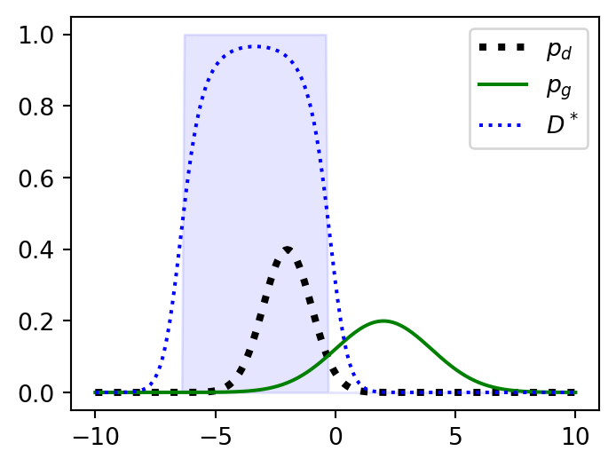
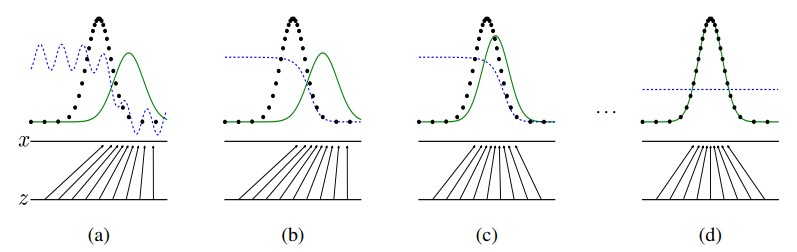

GAN
Which Comes First? Generator or Discriminator?
ML
Generative Models
There is an interactive playground available at GAN Lab. Feel free to explore it.
Zero-sum game of a Generator and a Discriminator
The zero-sum property (if one gains, another loses) means that any result of a zero-sum situation is Pareto optimal which is also called a conflict game1.
The generator and discriminator engage in a zero-sum game, where the generator tries to produce data that fools the discriminator, while the discriminator aims to correctly identify real versus generated (fake) data. This interaction can be expressed with a payoff matrix.
| \(D_\text{good}\) | \(D_\text{poor}\) | |
| \(G_\text{good}\) | \(( 0, 0)\) | \(( 1,-1)\) |
| \(G_\text{poor}\) | \((-1, 1)\) | \(( 0, 0)\) |
The payoff matrix shows all the combinations of what players can move. The gains for \(G\) and \(D\) in each state are denoted by tuples.
The best choice for \(D\), regardless of what \(G\) chooses, is \(D_\text{good}\). When \(G\) chooses \(G_\text{good}\), \(D\) can move from \(-1\) to \(0\), gaining \(+1\), and when \(G\) chooses \(G_\text{poor}\), \(D\) can move from \(0\) to \(1\), also gaining \(+1\), making \(D_\text{good}\) a dominant strategy. Same for \(G\), making \(G_\text{good}\) a dominant strategy.
The solution for this game is choosing \(D_\text{good}\) and \(G_\text{good}\) which is considered as a Nash Equilibrium in GANs, maximizing both players’ gains.
However, the question of whether a Nash Equilibrium exists in the GAN framework remains open. Read Farnia and Ozdaglar (2020) to find out more.
Since the GAN framework can be modeled as a zero-sum game, we can also derive the same Nash Equilibrium using the second element of the tuples (\(D\)’s gain), which provides a more compact representation. This becomes the value function.
The Value Function
\[ \min_G \max_D V(D,G) = \mathbb E_{\mathbf x \sim p_\text{data}(\mathbf x)}[\log D(\mathbf x)] + \mathbb E_{\mathbf z \sim p_\mathbf{z}(\mathbf z)}[\log (1-D(G(\mathbf z)))] \]
The generator takes a latent variable \(\mathbf z\) as input and outputs generated data \(\mathbf x\). The discriminator takes data \(\mathbf x\) as input and outputs a probability \(y\), representing whether the data is real (\(1\)) or fake (\(0\)).
\[ \begin{align*} G &:\mathbf z \to \mathbf x \\ D &:\mathbf x \to y \end{align*} \]
The value function (\(V\)) consists of two log-likelihood losses, each from a Bernoulli distribution: one representing the genuine data distribution and the other, the fake data distribution.
Let \(\mathbf{x} \sim p_\text{data}(\mathbf{x})\) represent a sample drawn from the genuine data distribution. They are all labeled as \(1\). Same thing for the fake data \(\mathbf{z} \sim p_\mathbf{z}(\mathbf{z})\). They are all labeled as \(0\).
Note
During training, we will keep the number of samples for \(\mathbf{x}\) and \(\mathbf{z}\) the same.
Objective of \(D\)
The Binary Cross-Entropy (BCE) is defined as follows.
\[ \mathcal L_\text{BCE}(\hat y, y) = - \lbrace y \log{\hat y} + (1-y) \log{(1-\hat y)} \rbrace \]
We can try to optimize the model by decreasing the \(\mathcal L\). Conversely, increasing \(-\mathcal L\) resembles the same objective. When dealing with \(D\)’s loss, we use the latter approach.
The loss of \(D\) is calculated with negative BCE loss on both real and fake data distributions and are added together.
\[ \max_D V(D,G) = \sum_{\mathbf x} -\mathcal L_\text{BCE}(D(\mathbf x), 1) + \sum_{\mathbf z} -\mathcal L_\text{BCE}(D(G(\mathbf z)), 0) \]
\(D\) will try to maximize the value function \(V(D,G)\) thus, \(\theta_\text{d}\) is updated with gradient ascent.
Objective of \(G\)
In \(G\)’s perspective, \(G\)’s objective is to fool \(D\) by creating more realistic data.
\[ \min_G V(G) = \sum_{\mathbf z} -\mathcal L_\text{BCE}(D(G(\mathbf z)), 0) \\ \]
\(G\) will try to minimize the value function \(V(G)\) thus, \(\theta_\text{d}\) is updated with gradient descent.
NoteUnifying the loss with respect to \(V\)
Note that we are not using \(\mathcal L_\text{BCE}(D(G(\mathbf z)), 1)\) as the value function for \(G\). In the context of zero-sum loss, we will try to unify the losses in terms of \(V\).
Theoretical Results

The figure above is from Goodfellow et al. (2014). The genuine data distribution \(p_\text{data}\) is represented by a black dotted line. and green denotes the generated distribution \(p_\text{g}\), and lastly the color blue denotes the discriminated distribution,
As mentioned above, the output of \(D\) is the probability that the data is genuine, so the height of the blue bar represents the corresponding value between \([0, 1]\). The value of the blue distribution is one-half on \(x\), where \(x\) represents the intersection of the black and blue lines.
Note
The results of this section are done in a non-parametric setting, e.g. we represent a model with infinite capacity by studying convergence in the space of probability density functions; \(p_\text{data}\) and \(p_\text{g}\).
We reach the global optimum of \(V\) when we approach optimal \(D\) and \(G\).
Optimal \(D\)
Optimal \(D\) can be obtained by maximizing \(V\). For any given \(G\), \(D\) will try it’s best to discriminate genuine data from the fake.
\[\begin{align*} V(D,G) &= \mathbb E_{\mathbf x \sim p_\text{data}(\mathbf x)}[\log D(\mathbf x)] + \mathbb E_{\mathbf z \sim p_\mathbf{z}(\mathbf z)}[\log (1-D(G(\mathbf z)))] \\ &= \int_\mathbf{x} p_\text{data}(\mathbf x) \log D(\mathbf x) d \mathbf x + \int_\mathbf{z} p_\mathbf{z}(\mathbf z) \log (1 - D(G(\mathbf z))) d \mathbf z \\ &= \int_\mathbf{x} p_\text{data}(\mathbf x) \log D(\mathbf x) d \mathbf x + \int_\mathbf{x} p_\text{g}(\mathbf x) \log (1 - D(\mathbf x)) d \mathbf x \\ &= \int_\mathbf{x} p_\text{data}(\mathbf x) \log D(\mathbf x) + p_\text{g}(\mathbf x) \log (1 - D(\mathbf x)) d \mathbf x \end{align*}\]
By setting \(p_\text{data}(\mathbf x)\) as \(a\) and \(p_\text{g}(\mathbf x)\) as \(b\), the inner part of the integral can be expressed as the following.
\[\begin{align*} f(y) &= a \log y + b \log (1-y) \\ \dfrac{d}{dy} f(y) &= \dfrac{a}{y} - \dfrac{b}{1-y} = 0 \\ \therefore y &= \frac{a}{a+b} \end{align*}\]
The optimal \(D\) can be defined as follows.
\[ D^*(\mathbf x) = \dfrac{p_\text{data}(\mathbf x)}{p_\text{data}(\mathbf x) + p_\text{g}(\mathbf x)} \]
Optimal \(G\)
With same \(V\), optimal \(G\) can be obtained by minimizing \(V\). We will find optimal \(G\) with respective to the optimal discriminator \(D^*\).
\[\begin{align*} V(D^*,G) &= \mathbb E_{\mathbf x \sim p_\text{data}(\mathbf x)}[\log D^*(\mathbf x)] + \mathbb E_{\mathbf z \sim p_\mathbf{z}(\mathbf z)}[\log (1-D^*(G(\mathbf z)))] \\ &= \mathbb E_{\mathbf x \sim p_\text{data}(\mathbf x)} \left[ \log \dfrac{p_\text{data}(\mathbf x)}{p_\text{data}(\mathbf x) + p_\text{g}(\mathbf x)} \right] + \mathbb E_{\mathbf z \sim p_\mathbf{z}(\mathbf z)} \left[ \log \dfrac{p_\text{g}(\mathbf x)}{p_\text{data}(\mathbf x) + p_\text{g}(\mathbf x)} \right] \\ &= \mathbb E_{\mathbf x \sim p_\text{data}(\mathbf x)} \left[ \log \dfrac{2 \ p_\text{data}(\mathbf x)}{p_\text{data}(\mathbf x) + p_\text{g}(\mathbf x)} \right] + \mathbb E_{\mathbf z \sim p_\mathbf{z}(\mathbf z)} \left[ \log \dfrac{2 \ p_\text{g}(\mathbf x)}{p_\text{data}(\mathbf x) + p_\text{g}(\mathbf x)} \right] - \log 4 \\ &= \mathbb E_{\mathbf x \sim p_\text{data}(\mathbf x)} \left[ \log \dfrac{p_\text{data}(\mathbf x)}{\dfrac{p_\text{data}(\mathbf x) + p_\text{g}(\mathbf x)}{2}} \right] + \mathbb E_{\mathbf z \sim p_\mathbf{z}(\mathbf z)} \left[ \log \dfrac{p_\text{g}(\mathbf x)}{\dfrac{p_\text{data}(\mathbf x) + p_\text{g}(\mathbf x)}{2}} \right] - \log 4 \\ &= D_\text{KL} \left( p_\text{data}(\mathbf x) \bigg\| \dfrac{p_\text{data}(\mathbf x) + p_\text{g}(\mathbf x)}{2} \right) + D_\text{KL} \left( p_\text{g}(\mathbf x) \bigg\| \dfrac{p_\text{data}(\mathbf x) + p_\text{g}(\mathbf x)}{2} \right) - \log 4 \\ &= 2 \ \mathrm{JSD}(p_\text{data}(\mathbf x) \| p_\text{g}(\mathbf x)) - \log 4 \\ &\geq -\log 4 \\[20pt] \min_{G} V(D^*, G) &= -\log 4 \iff p_\text{data} = p_\text{g} \\ V(D^*,G^*) &= -\log4 \end{align*}\]
NoteDoes the order of \(\min\), \(\max\) matter?
Yes, it does.
Mathematically, \(\min_G \max_D V(D, G)\) is the same as \(\min_G (\max_D V(D, G))\).
We try to solve from the inner parentheses.
In GAN’s perspective, as long as \(D\) tries its best to discriminate the two distributions, the best strategy for \(G\) is to mimic \(p_\text{data}\) as closely as possible.
References
Farnia, Farzan, and Asuman Ozdaglar. 2020. “Do GANs Always Have Nash Equilibria?” In Proceedings of the 37th International Conference on Machine Learning, edited by Hal Daumé III and Aarti Singh, 119:3029–39. Proceedings of Machine Learning Research. PMLR. http://proceedings.mlr.press/v119/farnia20a.html.
Goodfellow, Ian J., Jean Pouget-Abadie, Mehdi Mirza, Bing Xu, David Warde-Farley, Sherjil Ozair, Aaron Courville, and Yoshua Bengio. 2014. “Generative Adversarial Networks.” https://arxiv.org/abs/1406.2661.